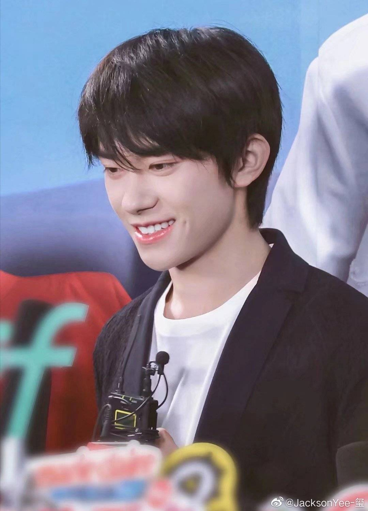
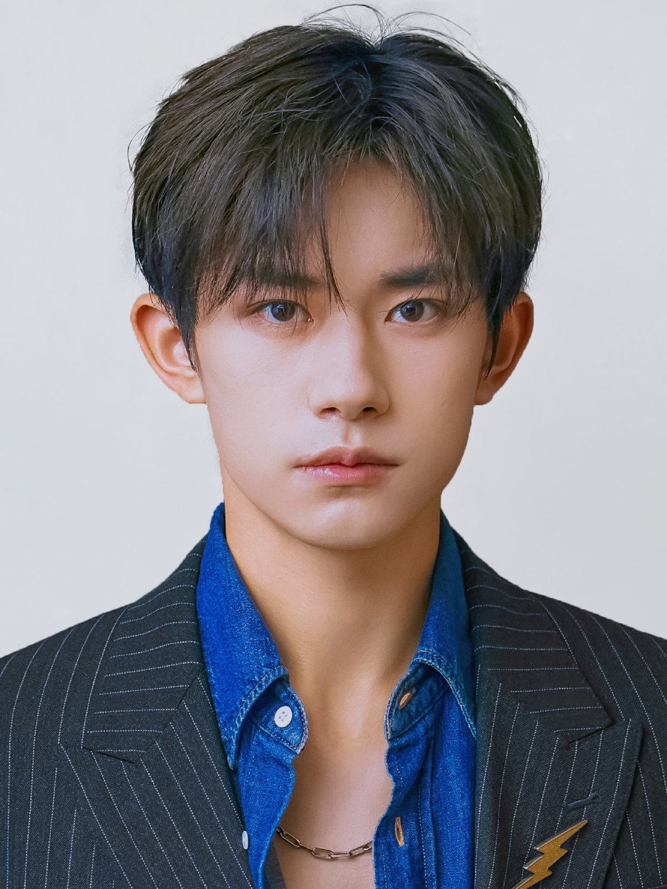

Welcome to Jackson Yee's World
Jackson Yee is a mainland Chinese actor, dancer and singer. After being discovered by a talent manager at a children's talent competition, Yee became the youngest member of the Chinese boy band TFBOYS in 2013.

About Jackson Yee
Jackson Yee, born on November 28, 2000, in Huaihua, Hunan, China, is a renowned singer, dancer, and actor. Thus begins the story of a teenager whose talent and hard work propelled him to stardom as a member of the famous Chinese boy band TFBOYS.
Early Life
Jackson showed an interest in music and performing arts at a very young age. Encouraged by his parents, he attended various classes and workshops, which paved the way for his future career.
Breakthrough with TFBOYS
In 2013, Jackson debuted as one of the three members of TFBOYS, quickly establishing himself as a cultural icon. The group's popularity soared not just in China, but across Asia, with several chart-topping hits and numerous awards.
Solo Career
While continuing his work with the boy band, Jackson also built a successful solo career. He released solo music projects which received critical acclaim and expanded his reach into acting, starring in blockbuster films and acclaimed television series.
Philanthropy
Apart from entertainment, Jackson is also known for his philanthropy work. He has been involved in various charitable causes and continues to inspire with his dedication to giving back to the community.
Awards and Recognitions
Over the years, Jackson has been the recipient of numerous prestigious awards recognizing his talents and contributions to the arts. His multi-faceted career is a testament to his diverse skills and commitment to his craft.